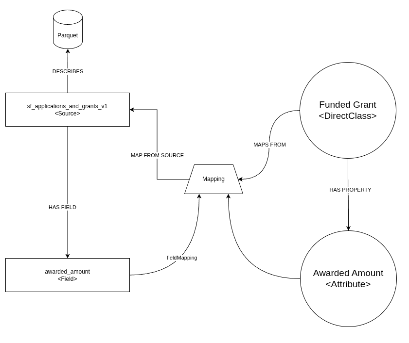
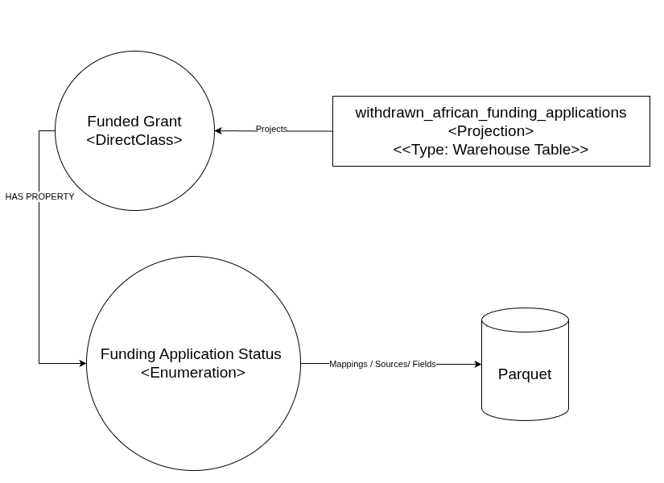
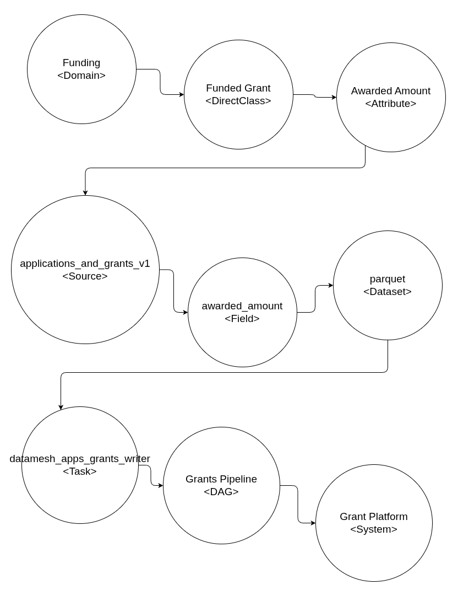
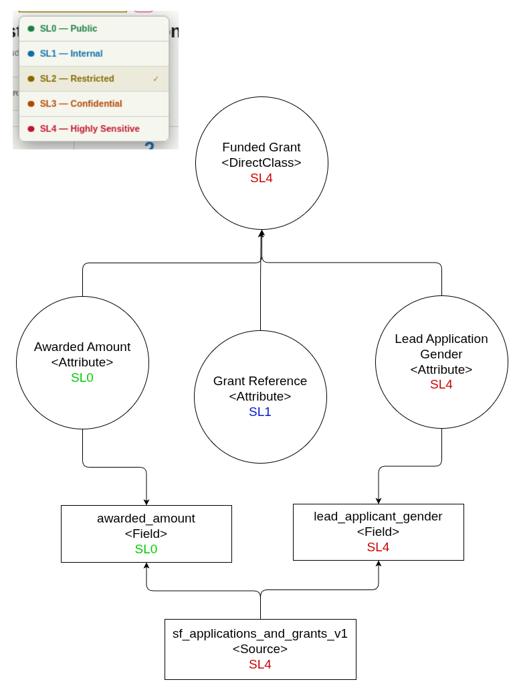

Part 3: When Meaning Becomes Operational
Jeff Uren ★ 2026-07-06
This is the third article in a series about building a shared understanding of data, ontologies, and data architecture (UDA) in a large organisation that struggles with meaning.
So far we've been talking about concepts.
- Applications
- Funded Grants
- Payments
- People
- Attributes
- Relationships
- Domains
It's all very... tidy.
It's also, on it's own, absolutely, completely, useless.
"Without data, you're just another person with an opinion."
An ontology that exists only as a diagram isn't much different than documentation. It might be beautifully designed, meticulously maintained, and technically correct, but if nobody builds systems on top of it, it's little more than an expensive glossary.
We've all seen those types of projects, business glossaries, metadata catalogues, a beautifully modeled enterprise ontology.
Three months later it's already drifting away from reality because reality kept moving while the documentation stood still.
The problem isn't that people don't care about it, it's that documentation is optional and low priority. Operationally important software isn't.
That's where we decided to do something slightly different. Instead of asking:
"How do we document the organisation?"
We asked:
"How do we make the organisation executable?"
Meaning has to pay its rent
One of my favourite tests for any piece of architecture is a really stupid simple question.
If I deleted this tomorrow, what would stop working?
If the answer is "nothing", then you've probably built documentation, if the answer is "lots of things", you've probably built infrastructure.
The UDA only becomes valuable when software depends on it, that's the threshold where meaning stops being descriptive and starts becoming operational.
Crossing into the physical world
Eventually every concept has to meet recorded data.
- Somewhere there really is an Awarded Amount
- Somewhere there really is an Application Status
- Somewhere there really is a Lead Organisation
They live in tables, Parquet files, APIs, CSV exports, and all the other wonderfully awkward places operational systems like to hide information.
These datasets aren't necessarily sources of trust, they're just a source of recorded values, the meaning lives elsewhere in our ontology.
But we need to connect those two worlds, and to do that we introduce a really simple idea: Mappings

A Mapping says:
This field represents this concept.
Not "looks like it a bit", or "probably corresponds to". Represents.
This means we stop asking databases what something means, and we start telling databases what the values represent.
Aside: We're keeping this intentionally simply, but in reality the relationships across all of these items is moderately more complex, the focus here isn't on the complexity of the implementation though, it's on what the overarching outcomes we're driving towards are. These mappings get slightly more complex, in that they also represent how relationships defined in our world are actually materialized in the physical world.
The bridge becomes the platform
Once those mappings exist something interesting starts to happen. You can begin at either end.
Start with a field, follow it to the Attribute, and follow that to the DirectClass it describes, and go further to the related concepts across the organisation.
Or start from the other direction and begin with a Funded Grant, find every Attribute that contributes information, then find every dataset that contributes that information, and find every physical field, every transformation, find every downstream consumer.
The meaning and storage stop being separate worlds and become one connected graph and that's where the UDA stops feeling like an ontology and starts feeling like critical infrastructure.
Building outputs from meaning
People rarely want an ontology in and of itself, they want some damn answers.
- Dashboards
- Reports
- Applications
- APIs
- Extracts
Traditionally we build those things from storage upwards.
Somebody writes SQL, or dataframe operations, someone else writes another version of the SQL, eventually everyone has slightly different answers to the same question.
We turned that process upside down, and instead of asking:
Which tables should I join?
we ask,
What concept am I trying to describe?
A Projection starts with meaning, it selects concepts, attributes, relationships and the platform works out where those values live.
Aside: A Projection doesn't have to be a single table, it can be an API endpoint (GraphQL or REST), an interval-based report, a data mart, a push to another system on a schedule, or any other output that can be derived from the underlying meaning and relationships. All the joins, transformations, storage, and final shape and implementation just become consequences of the semantics which is whole new way of building data products.

Lineage becomes obvious
Organisation inevitably decide they need lineage, then they buy tooling to reconstruct it afterwards. It's a bit like trying to work out where every brick in your house came from after you've already built it.
When meaning drives the platform, lineage appears almost accidentally. Every projection already knows:
- which concepts represent it
- which Attributes it selected
- which Mappings it relied on
- which Fields supplied values
- which Sources contained those fields

You don't discover lineage, you generate it, because it was part of the process from the beginning.
Governance follows meaning
Governance suffers from the same problem in that most governance systems attach themselves to storage.
- This table contains personal information
- That bucket contains financial information
- This report contains sensitive data
There's nothing inherently wrong with those statements, they're just unbelievably fragile.
Move the data somewhere else and suddenly you've got to rediscover everything.
So instead we attach governance to meaning, we say:
- An Attribute can be sensitive
- A Relationship can have restrictions
- A Concept can require approval
Once those lead ideas exist, they naturally propagate. Every Mapping, Projection, API, and Application inherits them and governance stops chasing data around the platform.
The platform carries governance wherever the meaning goes.

A good example is properties like sensitivity which naturally flow outwards from where they're declared to the ends of the system where higher-level concepts and products adopt the highest level sensitivity of their components.
Because of the nature of the graph, and the connections inherent to it, we can even compute the sensitivity of a Projection which mixes, joins, transforms, renames, and otherwise manipulates concepts and attributes based on the sensitivity of the underlying selected attributes.
Don't let this sound like a trivial thing, it turns governance into something that can be easliy reasoned about, and automatically enforced, rather than something that has to be manually discovered, documented, and enforced.
Change becomes understandable
Every engineer eventually hears the same question:
If we change this... what breaks?
Normally that answer involves a fair bit of archaeology, searching through repos, reading SQL, checking dashboards, guessing.
An operational ontology answers the question immediately and directly, if a source field changes we already know:
- Which mappings depend on it
- Which concepts are affected
- Which projections use those concepts
- Which APIs expose them
- Which applications consume those APIs
The interesting thing isn't that we can build dependency graphs, it's that those dependency graphs exist because we modelled the meaning first.
Quality becomes correspondence
Earlier in this series I described data quality as correspondence.
How closely does a recorded value match the piece of reality it claims to describe?
Operational semantics finally lets us enforce that because Awarded Amount should never be negative, and a Grant shouldn't finish before it starts, and because an Application can't be Awarded if it was Withdrawn.
Those aren't really database rules, they're organisational rules. We need to know when our world isn't working according to the rules of the organisation.
The ontology gives those checks somewhere to live that's butted right up against the meaning.
This changes how some software is written
This is probably the biggest shift in thinking here, because we're no longer writing software that understands databases, we're writing software that understands the organisation.
Things like databases, warehouses, and storage formats are just implementation details, the organisation itself is the interface.
Once software understands meaning rather than storage (but knows how to leverage the values in storage), an enormous amount of functionality stops needing to be hand-written because it can be generated, derived, projected, traversed, and explored.
That's what has started happening for us.
- GraphQL APIs
- Warehouse projections
- Semantic search
- Change impact
- Governance propagation
- Lineage
None of this were separate projects, they were all consequences of the same decision, model the organisation first.
Let everything else follow.
In the next article, we're going to go deeper into the things that having this language, the ontology and it's components gives you an organisation.